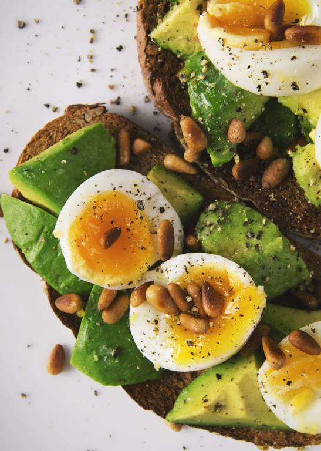

Explore mais conteúdos
Descubra informações valiosas que podem te ajudar na sua jornada de aprendizado e bem-estar.
Voltar →
Uma nutrição saudável vai além de simplesmente contar calorias. Trata-se de fornecer ao seu corpo os nutrientes necessários para funcionar de forma ótima. Alimentos frescos, integrais e nutritivos, como frutas, verduras, grãos integrais, legumes e fontes de proteína de alta qualidade, são os pilares de uma dieta rica e balanceada.
Variedade é chave. Quanto mais colorido e diversificado o seu prato, mais nutrientes você estará consumindo!
Descubra informações valiosas que podem te ajudar na sua jornada de aprendizado e bem-estar.
Voltar →